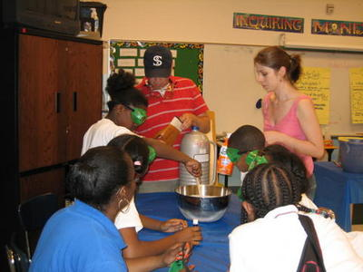
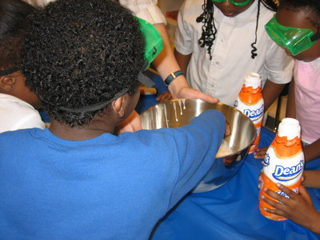
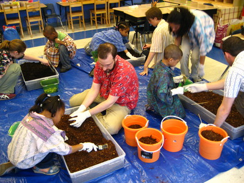
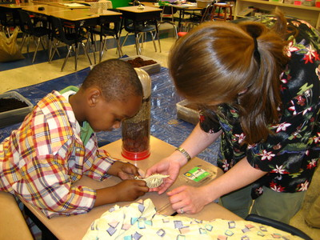
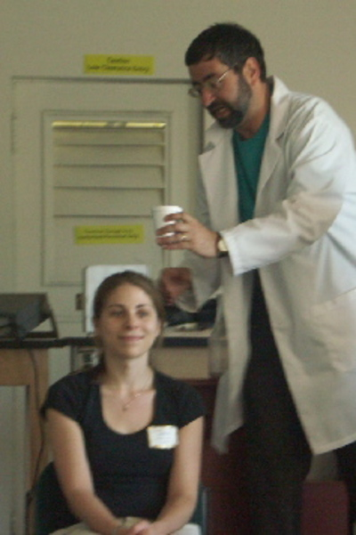

In addition to doing science, I also enjoy teaching it.
From September 2005 through June 2008 I was an instructor with STOMP through the University of Chicago. Every week during the school year our team of instructors organized and ran an after-school science club at a local public elementary school.
|  |  |
| Making ice cream with liquid nitrogen | |
|  |  |
| Digging for dinosaurs | |
| For the academic year 2004-2005, I was an intern with the Museum Presentation in Science (aka SCOPE) program. We collaborated with SciTech Hands-On Museum to develop new science exhibits showcasing current research. |  |
| Here I'm participating in a demo at SciTech. I don't remember what happened next. |